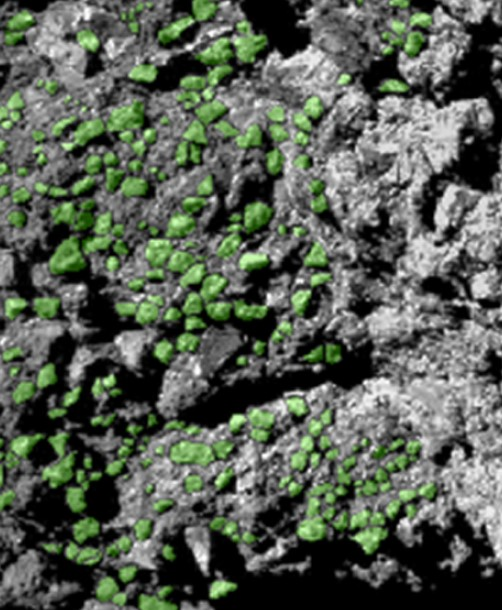
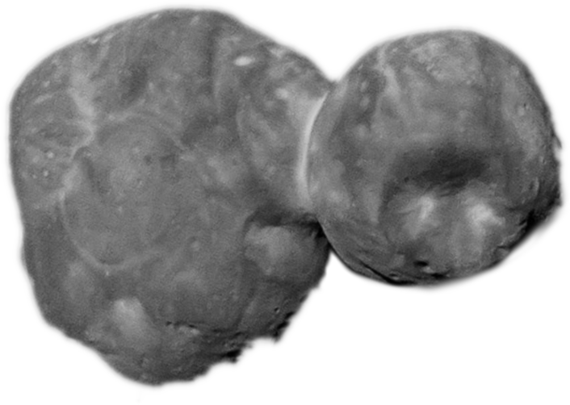

Interplanetary Dust Particles (IDP)
- IDPs are formed by condensation in the solar nebula, or in the interstellar medium.
- They have typically a size of 0.1 – 1 micrometer.
- They are the building blocks of the planets, asteroids, comets, moons and trans-Neptunian objects.
- IDPs can be collected in the upper Earth atmosphere, and by spacecraft missions (Rosetta, Stardust).
- In cometary dust tails they can be directly observed.

Particle observed by ROSETTA.
Credit: Mannel et al., 2019
Interplanetary Dust Particle.
Credit: Amara/Wikipedia (CC)
Comet Hale Bopp.
Credit: Jerry Lodriguss
From Dust to Pebbles
- Dust particles collide at low speed.
- Upon collision, dust particles stick.
- Successive sticking events lead to fractal agglomerates.
- Collision of large fractals can lead to compaction.
- Compact agglomerates do not stick, but bounce off in collisions.
- Growth stops at mm to cm.
- mm- to cm-sized compact agglomerates are called pebbles.
Successive sticking events in a drop tower experiments.
Credit: ???
Scan through a fractal agglomerate grown in a suborbital flight.
Credit: ???
Pebbles
- Their size is typically mm to cm.
- They can be observed by Radio Telescopes (ALMA) in other protoplanetary discs.
- Their porosity is ~65%.
- Pebbles have been directly observed on the surface of Comet 67P.

Computer modell of a pebble.
Credit: ???

Silica dust pebbles under the microscope.
Credit: B. Gundlach
Protoplanetary disks observed by ALMA radio telescope.
Credit: ALMA (need better ref)

Green marked pebbles photographed on comet 67P.
Credit: Poulet et al., 2016
From Pebbles to Planetesimals
- Pebbles cannot grow any further by collisional sticking.
- Pebbles are locally and spatially concentrated by hydrodynamic effects.
- Upon reaching a critical concentration, pebble clouds collapse under their own gravity and form planetesimals.
Simulation of the concentration of pebbles via the so-called streaming instability.
Credit: Johansen et al. 2007
Planetesimals
- Planetesimals are ~km-sized objects, which is the critical size to attract material by its own gravity.
- They can be observed today as comets, asteroids, or trans-Neptunian objects.
- Three different theories exist that explain the formation of planetesimals (Gravitational Collpase, Mass Transfer, or Direct Growth).
- After their formation, some planetesimals suffered serious alteration by impacts, or temperature changes, while other have been left unchanged until today (comets).
- Some planetesimals are called “rubble piles”, which means that a catastrophic impact has destroyed the original object, but thanks to gravity, the material reassembled to form a new body, the rubble pile planetesimal.
- Planetesimals are the seeds for the further growth of larger objects in planetary system.

Photo of Arrokoth made by the New Horizons space craft.
Credit: NASA